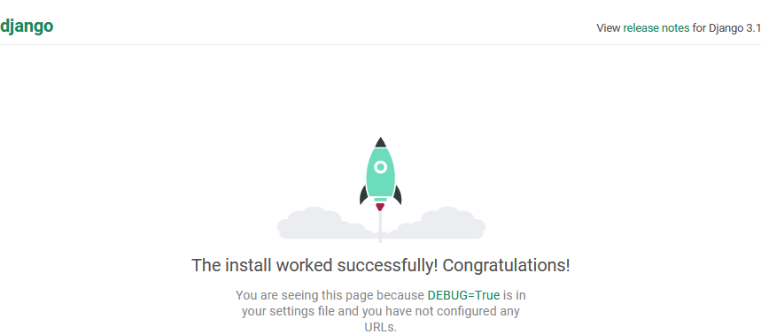
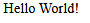
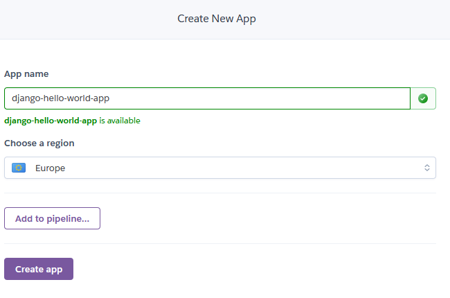
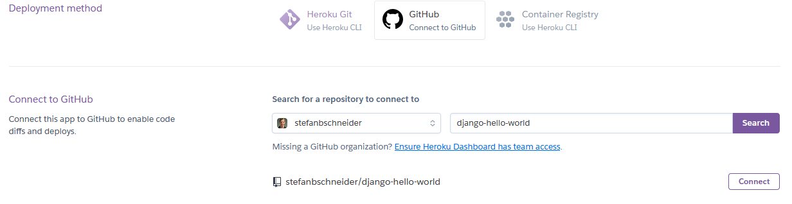
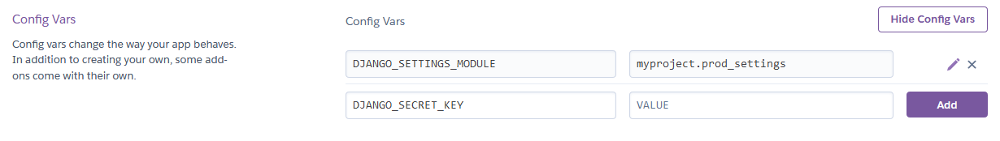

In this guide, I show how to setup a simple Django web app that says “Hello World!” and how to deploy it on Heroku through GitHub. The process is simple enough, but I still kept running into errors when deploying new Django apps, so I thought to finally just write it down step-by-step.
Requirements
For that, Heroku and GitHub accounts are required. Both are free.
All code should be in a GitHub repository. For reference, this link my GitHub repository. The steps described here belong to release v1.0.0.
Django “Hello World” App
Initial Setup
Install Django:
pip install djangoCreate a new Django project (inside the GitHub repository):
django-admin startproject myprojectA project can consist of multiple apps. Create a new Django helloworld app inside the myproject project:
cd myproject
python manage.py startapp helloworldRun the dev server:
python manage.py runserverGo to http://localhost:8000/ in the browser. This should confirm the successful initial setup:

Create the “Hello World” App
Link the helloworld app to the project by adding
'helloworld.apps.HelloworldConfig',to the INSTALLED_APPS inside myproject/settings.py.
Create a new HTML-template index.html inside helloworld/templates/helloworld (also create these folders):
<!DOCTYPE html>
<html lang="en">
<head>
<meta charset="UTF-8">
<title>Hello World</title>
</head>
<body>
Hello World!
</body>
</html>Create helloworld/urls.py to configure a URL path showing the new template:
from django.urls import path
from django.views.generic import TemplateView
urlpatterns = [
path('', TemplateView.as_view(template_name='helloworld/index.html'), name='index'),
]Finally, link to the helloworld URLs from the project’s myproject/urls.py:
from django.contrib import admin
from django.urls import path, include
urlpatterns = [
path('', include('helloworld.urls')),
path('admin/', admin.site.urls),
]Now, http://localhost:8000/ should show the dummy “hello world” message:

Deploying the App on Heroku
Creating a New App on Heroku
To create a new app on Heroku, I log into the Heroku dashboard and select New > Create new app. For the new app, any unique name is ok (I chose django-hello-world-app).

The name of your Heroku app will also determine its URL, which is <app-name>.herokuapp.com. It can still be changed in the settings later.
Next, I select my GitHub repository as deployment method inside Heroku (this may require authorization using GitHub credentials):

Finally, I have to set some configuration variables (= environmental variables) inside Heroku: Settings > Config Vars > Reveal Config Vars. * Set DJANGO_SETTINGS_MODULE to myproject.prod_settings, which is are the settings for production deployment, created later. * Set DJANGO_SECRET_KEY to a randomly generated secret key that is used for deployment. This key must not be commited to the GitHub repository.

Preparing Deployment
Before the actual deployment on Heroku, a few additional steps are required.
Currently, the generated folder structure should look like this:
myproject/
helloworld/
myproject/
manage.pyFor deployment on Heroku, move everything into the top-level folder such that manage.py is in the project root and there is no more top-level myproject directory:
helloworld/
myproject/
manage.pyThe Procfile indicates how to deploy and serve the web app, here with gunicorn:
release: python manage.py migrate --no-input
web: gunicorn myproject.wsgiAccordingly, the dependencies of this “hello world” app are (saved in requirements.txt):
django
django-heroku
gunicornHeroku needs django-heroku for proper deployment (see Heroku docs).
Specify the root path for static files by appending to the myproject/settings.py (also import os):
# Static files (CSS, JavaScript, Images)
# https://docs.djangoproject.com/en/3.1/howto/static-files/
STATIC_URL = '/static/'
# path to where static files are copied for deployment (eg, for heroku)
STATIC_ROOT = os.path.join(BASE_DIR, 'staticfiles')
# location of static files in local development: https://learndjango.com/tutorials/django-favicon-tutorial
# not needed yet, only once adding static files (eg, images)
# STATICFILES_DIRS = [os.path.join(BASE_DIR, 'static'),]Create myproject/prod_settings.py with additional settings for production deployment:
""" Production Settings """
# default: use settings from main settings.py if not overwritten
from .settings import *
import django_heroku
DEBUG = False
SECRET_KEY = os.getenv('DJANGO_SECRET_KEY', SECRET_KEY)
# adjust to the URL of your Heroku app
ALLOWED_HOSTS = ['django-hello-world-app.herokuapp.com']
# Activate Django-Heroku.
django_heroku.settings(locals())Commit and push everything to the repository’s main branch.
Automated Deployment via GitHub
To test the deployment, go to the Heroku dashboard Deploy > Manual deploy, select the main branch and deploy. After the build and deployment succeeds, click Open app to open <app-name>.herokuapp.com, which should show “Hello World”. Deployment successful!
Finally, enable automatic deploys at Deploy > Automatic deploys > Enable such that the latest version of the Django app is build and deployed automatically with every push to the main branch.
Heroku’s free dynos are free but power off if they are unused. So loading a deployed app that hasn’t been used in a while may take multiple seconds.
What Next?
Small example apps I built with Django and deployed on Heroku: